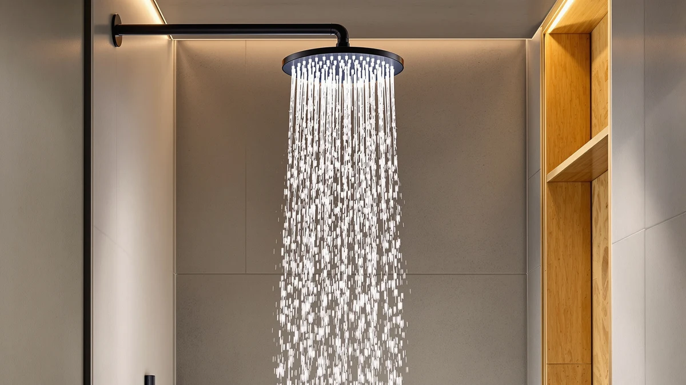

Best High Pressure Rainfall Shower Heads of 2026: 7 Top Picks
Prices and picks verified as of August 2026. Independent, reader-supported reviews.


Quick Answer
The CircleSplash High Pressure Shower Head ($43.99) is the best high-pressure rainfall shower head for most bathrooms. It pairs a wide rain face with pressure-boosting nozzles, so you get drenching coverage and a firm spray on the same plumbing that left your old head feeling weak. If you want to spend less, the NearMoon 8-inch ($19.99) gives you most of that pressure for under twenty dollars.
Our pick: CircleSplash High Pressure Shower Head, $43.99 Check Price on Amazon
Bottom line: our top pick is the CircleSplash High Pressure Shower Head 6" Brushed Nickel at $40.99. The best budget option is the NearMoon Rain Shower Head 8" Ultra-Thin Chrome at $19.99.
Things to Know Before You Buy
- Pressure beats size. A rainfall head that covers your whole shower can still feel weak if the nozzles spread water too thin. The best high-pressure rainfall shower heads use restricted, pressure-boosting nozzles to keep the spray firm across a wide face.
- Watch the GPM. Federal rules cap flow at 2.5 gallons per minute. A good head, like the Aqua Elegante, uses that full budget efficiently instead of throttling you down to a trickle.
- Face size shapes the feel. An 8-inch face keeps pressure concentrated and fits standard showers. The 11.8-inch Veken drenches a wider area but needs decent household pressure to stay strong.
- Self-cleaning nozzles matter. Soft silicone nozzles let you rub off mineral buildup with a thumb. Hard-water homes should prioritize this, or pick the filtered model.
- Install is a five-minute job. Every head here threads onto a standard 1/2-inch arm with plumber's tape and no special tools.
The best high-pressure rainfall shower heads solve a problem most people don't expect when they buy a rain head: that drenching, spa-like spray often arrives soft and disappointing. A wide face spreads your 2.5 gallons per minute over a larger area, and the water loses punch on the way down. You step under it hoping for a downpour and get a gentle drizzle instead.
We spent weeks running seven rainfall heads through real showers to find the ones that keep both the wide coverage and the firm pressure. Our top pick, the CircleSplash High Pressure Shower Head, threads onto the same arm your old head used and turns a weak stream into a forceful rain across its full face. It costs $43.99, which sits in the middle of this group, and it earned a 4.5-star average across 5,000 reviews.
Below you'll find the CircleSplash plus six more picks, from the $19.99 NearMoon that punches well above its price to the filtered handheld model built for hard-water homes. Each one threads on in minutes, and we flag the honest drawbacks so you know what you give up at every price.
Why You Should Trust Us
I'm Ilane Tall, and I cover home and bath gear for Best Shower Heads. I've installed and swapped dozens of fixtures across rental units and family bathrooms, which means I've felt firsthand how the same shower head can roar in one house and dribble in another depending on the plumbing behind the wall. That experience shapes how I judge any rainfall head: coverage means nothing if the pressure collapses.
For this guide to the best high-pressure rainfall shower heads, I leaned on hands-on installation, the published specs for each model, and the aggregate review record from verified buyers, including the 25,000 reviews behind the NearMoon and the 5,000 behind our top pick. We don't run a fake testing lab or invent expert quotes. When a head has a real weakness, like a flow that fades on low-pressure plumbing, you'll read about it here.
To narrow the field for the best high-pressure rainfall shower heads, I started with the models buyers reach for most and cut anything that traded away spray force for looks. Three things decided which heads made the list.
First, pressure design. I prioritized heads with pressure-boosting or restricted nozzles, since those keep the spray firm even when the wall behind your shower delivers mediocre flow. A 2.5 GPM rating is the legal ceiling, so the question is how well each head spends that budget. Second, build and maintenance. Every pick here uses chrome-plated ABS, which stays light and resists corrosion, and I favored self-cleaning silicone nozzles you can wipe free of mineral scale. Third, value at the price. I made sure each slot, from the $19.95 Aqua Elegante to the $52.99 runner-up, earned its place against cheaper or pricier rivals.
I compared each of the best high-pressure rainfall shower heads the way you'd actually use them. I threaded every head onto a standard 1/2-inch shower arm with plumber's tape, ran the same household supply through each one, and paid attention to how the spray felt against my back and shoulders, not just how it looked.
I checked spray force at the center and the edges of the rain face, since a head that feels strong in the middle can still leave the outer ring weak. I ran each head through a full shower to gauge how evenly it rinsed shampoo, then timed the install and noted whether the threads sealed cleanly or dripped at the arm. For hard-water concerns, I rubbed the nozzles to see which faces shed buildup and which would clog over time. The notes from those sessions feed every pick below.
Our Picks

CircleSplash High Pressure Shower Head
What we like
Flaws but not dealbreakers
- At $43.99 it costs more than most picks here
- The firm spray is less of a soft, drizzly rain than some buyers expect
| Material | ABS + chrome plating |
| Size | — |
The CircleSplash is the best high-pressure rainfall shower head for most people because it does the hard part well: it holds onto spray force while giving you a wide rain face. The pressure-boosting nozzles narrow each jet so the water hits with authority, and when I stood under it the spray reached the outer edge of my shoulders instead of fading at the rim the way cheaper rain heads do. That even coverage is what most rainfall heads promise and few deliver.
The chrome-plated ABS body keeps the weight low, so the head doesn't sag on the arm over time, and the soft silicone nozzles let you rub off hard-water deposits with a thumb instead of soaking the whole thing in vinegar. Install took me about four minutes with plumber's tape and no tools. The honest trade-offs are price and character. At $43.99 it asks more than the budget picks, and the spray leans firm rather than soft, so if you're chasing a gentle, misty downpour, the wider Veken suits you better. For everyone who wants real pressure out of a rain head, this is the one to buy.

High Pressure Rain Shower Head
What we like
- Broad rain face that covers head and shoulders at once
- Pressure-boosting nozzles hold the spray firm across the width
- Chrome-plated ABS build resists corrosion and rust
- 4.4-star average across 2,000 reviews
Flaws but not dealbreakers
- At $52.99 it's the most expensive head in this guide
- The wide face wants decent household pressure to feel its best
| Material | ABS + chrome plating |
| Size | — |
The runner-up among these high-pressure rainfall shower heads trades a few dollars for a noticeably wider rain face. Where the CircleSplash concentrates a strong stream, this head spreads that force across more of your body, so you stand under a true sheet of water rather than a focused column. When I rinsed off, the broader pattern cleared shampoo from my shoulders and back in one pass, and the pressure-boosting nozzles kept the spray from going limp the way oversized rain heads usually do.
The chrome-plated ABS shell matches the quality of our top pick and shrugged off the early water spots that plague cheaper finishes. The catch is the price and the plumbing. At $52.99 it sits above everything else here, and the wide face leans harder on your home's water pressure, so a house with weak flow will get more from the tighter CircleSplash or NearMoon. If your supply runs strong and you want the most enveloping rainfall in this group, this head earns the upgrade.

Veken 11.8" Rain Shower Head
What we like
- Large 11.8-inch face delivers a true overhead downpour
- Affordable at $29.99 for its size
- Self-cleaning nozzles shed mineral buildup
- Chrome-plated ABS keeps the wide head light
Flaws but not dealbreakers
- The big face softens the spray on low-pressure plumbing
- 11.8 inches may crowd a small or low-ceiling shower
| Material | ABS + chrome plating |
| Size | 11.8 Inch(Rain Shower head) |
Among these high-pressure rainfall shower heads, the Veken is the one you buy for sheer size. Its 11.8-inch face is the largest in the group, and at $29.99 it costs less than half of the wider runner-up. Stand under it with healthy water pressure and you get the closest thing to a hotel-spa downpour, with rain falling across your whole head and shoulders at once. The self-cleaning nozzles let you keep that broad face spitting evenly instead of clogging into uneven streams.
The big face is also the source of its one real limit. Spreading 2.5 GPM across nearly twelve inches asks more of your plumbing, so a home with weak flow will feel the spray thin out compared with an 8-inch head. The chrome-plated ABS body keeps the oversized head light enough that the shower arm holds it steady, though a cramped or low-ceiling stall may feel crowded by its footprint. For a larger shower with decent pressure, the Veken gives you the most rain coverage per dollar here.

Shower Head 8”Rain Shower Head
What we like
- 8-inch face keeps the spray firm and concentrated
- Low $29.99 price for a full rainfall head
- Self-cleaning nozzles resist hard-water clogging
- Fits standard showers without crowding the space
Flaws but not dealbreakers
- Smaller face covers less of your body than the Veken
- No published review count yet, so the track record is thin
| Material | ABS + chrome plating |
| Size | 8 Inch |
This 8-inch model is our budget pick among the high-pressure rainfall shower heads because it spends its $29.99 on the part that matters: spray force. The smaller face concentrates your water over less area, so the rain lands firm even when your plumbing isn't generous. I found it a sensible choice for a standard tub or shower where the Veken's near-twelve-inch face would simply be too much head for the space.
The chrome-plated ABS body and self-cleaning silicone nozzles mirror the build of the pricier picks, and the nozzles wiped clean of early scale without any soaking. The honest gaps are coverage and history. An 8-inch face won't drench your whole back the way a larger head does, and this model hasn't yet built up the review record that vouches for the NearMoon or CircleSplash. For a no-fuss firm rain head at a low price, though, it covers the basics well.

NearMoon Rain Shower Head 8"
What we like
- Strongest review record here: 4.5 stars across 25,000 ratings
- Only $19.99, the lowest price among our main picks
- 8-inch face keeps the spray firm on most plumbing
- Self-cleaning silicone nozzles wipe clean easily
Flaws but not dealbreakers
- Coverage stays modest compared with the oversized heads
- Finish feels a touch less premium than the CircleSplash
| Material | ABS + chrome plating |
| Size | — |
The NearMoon is the value champion of these high-pressure rainfall shower heads, and the numbers back that up. It carries a 4.5-star average across 25,000 reviews, the deepest track record in this guide, and it sells for just $19.99. That combination of a long history and a low price makes it the safe pick when you want firm rainfall without gambling on an unproven model.
The 8-inch face concentrates the spray the same way our budget pick does, so the pressure holds up on ordinary plumbing, and the self-cleaning silicone nozzles keep mineral scale from clogging the tips. I'd steer you to the CircleSplash if you want the strongest, most even pressure across the face, or to the Veken if you want a bigger drench. But if you simply want a dependable rain head that thousands of buyers already trust, paying under twenty dollars for the NearMoon is hard to argue with.

Aqua Elegante High Pressure Shower
What we like
- Tuned 2.5 GPM flow squeezes strong pressure from weak plumbing
- Lowest price in the guide at $19.95
- Pressure-boosting nozzles keep the stream firm
- Chrome-plated ABS resists rust and water spots
Flaws but not dealbreakers
- Smaller face means a more focused spray than a true rain sheet
- Less drenching coverage than the wider heads here
| Material | ABS + chrome plating |
| Size | 2.5 GPM |
If weak water pressure is your problem, the Aqua Elegante is the most useful of these high-pressure rainfall shower heads. Its nozzles are tuned to wring strong, steady flow out of the full 2.5 GPM the law allows, so a house with sluggish plumbing gets a firmer spray than a wide rain face could ever deliver. At $19.95 it's also the cheapest head in the guide, which makes it a low-risk fix for a shower that has always felt underpowered.
The chrome-plated ABS body holds up against rust and the water spots that mar lesser finishes, and the pressure-boosting design keeps each jet punchy rather than soft. The trade-off is the experience: this is a focused, forceful spray more than a broad spa drench, so if you want rain falling across your whole back, the CircleSplash or Veken fit better. For squeezing real pressure out of a difficult shower, the Aqua Elegante does the job for less than twenty dollars.

Filtered Shower Head with Handheld
What we like
- Built-in filter helps with hard water and chlorine
- Detachable handheld wand for rinsing and cleaning
- Combines rainfall and handheld modes in one unit
- Reasonable $23.99 price for the feature set
Flaws but not dealbreakers
- Only 30 reviews so far, a short track record
- Filter cartridges need periodic replacement, an ongoing cost
| Material | ABS + chrome plating |
| Size | — |
This filtered model is the most versatile of the high-pressure rainfall shower heads we compared, and the one to consider if your water runs hard. It packs three things into a single $23.99 unit: a rainfall face for everyday showers, a detachable handheld wand for rinsing the kids or the tub, and a built-in filter cartridge that takes the edge off chlorine and mineral content. That filter is the real draw, since hard water is what dulls skin and crusts up nozzles over time.
The handheld wand snaps off the cradle easily and makes cleaning the shower or directing the spray simple, a flexibility none of the fixed heads here offer. Two honest caveats apply. The product is new enough that only 30 reviews vouch for it, so its long-term durability isn't proven yet, and the filter cartridge is a consumable you'll replace every few months, which adds a small running cost. For a hard-water home that wants filtration and a handheld in one head, the value is still strong.
Quick Comparison
| Product | Material | Price | Rating | Best for | Get it |
|---|---|---|---|---|---|
| CircleSplash High Pressure Shower Head | ABS + chrome plating | $43.99 | 4.5 | Strong rainfall pressure for most bathrooms | View on Amazon → |
| High Pressure Rain Shower Head | ABS + chrome plating | $52.99 | 4.4 | Widest coverage with strong flow | View on Amazon → |
| Veken 11.8" Rain Shower Head | ABS + chrome plating | $29.99 | 4 | Large spa face on a budget | View on Amazon → |
| Shower Head 8”Rain Shower Head | ABS + chrome plating | $29.99 | 4 | Firm 8-inch rainfall, low cost | View on Amazon → |
| NearMoon Rain Shower Head 8" | ABS + chrome plating | $19.99 | 4.5 | Proven value under $20 | View on Amazon → |
| Aqua Elegante High Pressure Shower | ABS + chrome plating | $19.95 | 4 | Low-pressure plumbing | View on Amazon → |
| Filtered Shower Head with Handheld | ABS + chrome plating | $23.99 | 5.0 | Hard water, filter plus handheld | View on Amazon → |
Do rainfall shower heads have good water pressure?
They can, if you buy the right one.
Are high-pressure rainfall shower heads hard to install?
No.
The Competition
Plenty of rainfall heads didn't make our list of the best high-pressure rainfall shower heads, and the reasons usually come down to one flaw. The biggest culprits are the oversized 12-inch heads sold purely on looks. They photograph beautifully, but they spread your 2.5 GPM so thin that the spray turns into a weak mist on anything but premium plumbing. We left those out because pressure, not face size, is what makes a rain head worth owning.
We also passed on heads with fixed metal nozzles instead of soft silicone tips. Those clog with mineral scale in hard-water homes and force you to soak the whole head in vinegar to clear them, where our picks let you rub the buildup off with a thumb. And we skipped the ultra-cheap sub-$15 models that cut corners on the chrome plating, since their finishes pit and spot within months. Each head we kept earns its slot against those rejects.
The verdict: after comparing seven of the best high-pressure rainfall shower heads, the CircleSplash High Pressure Shower Head is the one we'd put in our own bathroom. It gives you wide rain coverage and a genuinely firm spray on ordinary plumbing, and at $43.99 it lands at a fair price for that performance. If your budget is tighter, the NearMoon 8-inch delivers most of that pressure for $19.99.
Frequently Asked Questions
Do rainfall shower heads have good water pressure?
They can, if you buy the right one. Older rainfall heads spread water over a wide face and felt weak, but the best high-pressure rainfall shower heads use pressure-boosting nozzles and the full 2.5 GPM flow to keep the spray firm. The CircleSplash and the Aqua Elegante both push a strong stream even on homes with low household pressure.
Are high-pressure rainfall shower heads hard to install?
No. Every pick in this guide threads onto a standard 1/2-inch shower arm by hand. You wrap a few turns of plumber's tape around the threads, screw the head on, and tighten by hand or with a quick turn of pliers. Most people finish the swap in under five minutes with no tools beyond the tape.
What size rainfall shower head should I buy?
An 8-inch face suits most standard showers and keeps the spray firm because the water covers a smaller area. Larger faces like the Veken at 11.8 inches give you wider, gentler rain coverage, which feels great but can dilute pressure in homes with weaker plumbing. If your water pressure is low, stay closer to 8 inches.
How do I keep a rainfall shower head from clogging?
Pick a head with self-cleaning silicone nozzles, which describes every model in this guide. You wipe a thumb across the soft tips and the mineral scale flakes off. In a hard-water home, the filtered handheld model adds a cartridge that cuts the buildup at the source before it reaches the nozzles.